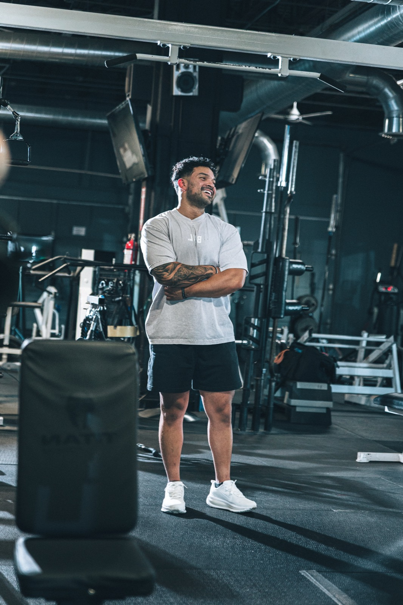

FAQ
Body Rebuild frequently asked questions.
Get clear answers about workouts, equipment, nutrition, coaching access, pricing, health screening, and enrollment.

Who is Body Rebuild for?
Body Rebuild is designed primarily for busy adults 35+ who have been inactive or inconsistent and want to rebuild strength, lose fat, and return to structured training.
Can someone under 35 apply?
Yes. Age 35+ is the primary audience, not an automatic exclusion. Applicants must be at least 18.
How often will I train?
You will complete three required strength workouts each week. A fourth Rebuild Accelerator is optional when schedule and recovery allow.
How long are the workouts?
Most sessions are designed to fit within approximately 30–60 minutes, depending on the program, training environment, and individual pace.
Do I need a gym?
No. Body Rebuild has Home and Gym tracks. The Home track requires adjustable dumbbells, resistance bands, a bench or sturdy chair, and safe floor space.
What if I am a beginner?
The Foundation track is designed for people rebuilding consistency, confidence, basic movement skill, and work capacity.
How is my training level selected?
Your recent consistency, training experience, movement confidence, progression knowledge, recovery, and safety status are reviewed. Preference alone does not determine the level.
Will I receive a meal plan?
No. BNL Plus does not provide rigid meal plans or medical nutrition therapy. The program uses practical meal structure, protein, portions, habits, logging when appropriate, and tier-specific review.
Do I have to track food?
Essentials can use general education and practical structure. Coaching and Private normally require honest food logging during the first 14 days so starting targets can be reviewed.
Can Body Rebuild work around an injury?
BNL Plus may modify exercises within fitness-coaching scope, but it does not diagnose injuries or provide rehabilitation. Medical clearance may be required.
Can I message Elijah whenever I want?
No tier includes instant or continuous access. Coaching uses a Friday–Sunday clarification cadence. Private provides same-business-day weekday support under the published cutoff.
What is included in Coaching?
Coaching includes personalized onboarding, weekly check-ins, individual written feedback, group accountability, Sunday group calls, one form video review per week, personalized starting nutrition targets, and targeted adjustments.
What is included in Private?
Private includes weekly 1:1 calls, same-business-day weekday support under the cutoff, deeper training and nutrition customization, up to two form reviews per week, travel and event strategy, and one monthly local or virtual live session.
Are results guaranteed?
No specific weight loss, strength number, or visual result is guaranteed. Coaching and Private may include an effort-based continuation guarantee subject to the final written agreement and documented execution requirements.
When does the next Coaching cohort start?
The next Coaching cohort is planned for August 10, 2026. Applications close August 7. Dates may be updated before enrollment is finalized.
How much does Body Rebuild cost?
Essentials is four payments of $149. Coaching is four payments of $229. Private is four payments of $499.
Can I cancel after enrolling?
The final written agreement controls cancellation, pause, refund, failed-payment, and late-payment terms. Review those terms before completing payment.
What happens after Week 16?
You may complete the program, renew another focused 16-week phase, or move into an approved BNL Plus continuity option based on your progress and support needs.